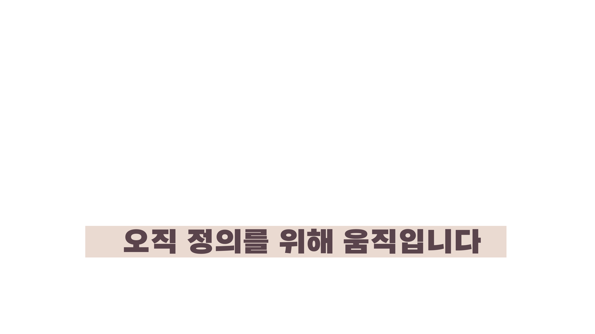

사이버 렉카는 거짓 정보를 유통하는 공장과 유사한 구조를 가지고 있다. 이들은 조회수와
댓글량을 통해 수익을 창출하는 비즈니스 모델을 운영하며, 익명성과 탈개인화된 사용자들의
집단 정체성 및 규범 동조를 악용하여 악성 댓글을 양산한다. 마치 공장에서 물건을 대량
생산하듯, 사이버 렉카는 자극적이고 혐오를 조장하는 콘텐츠를 제작하여 온라인에서
확산시킨다. 이러한 콘텐츠는 특히 플레이밍(공격적 언행)과 트롤링(부정적 표현)을 유도하여
댓글에서 집단적 적대감과 동질성을 강화하고, 외부 집단에 대한 혐오와 적의를 증폭시킨다.
이로 인해 사이버 렉카는 사회적 규범이나 윤리적 책임을 회피하며, 여성혐오와 같은 편견을.
강화하는데 적극 활용된다. 이러한 혐오 정서의 활용은 더 많은 조회수와 댓글을 유도해 수익을
극대화한다. 결국 사이버 렉카는 거짓 정보를 대중의 감정에 호소하여 확산시키고, 사회적
갈등을 부추기는 악순환을 만들어내는 '거짓 정보 유통 공장'으로 볼 수 있다.


사이버 렉카를 시청하는 이유는 다양한데, 그중 하나는 타인에 대한 우월감을 느끼기 때문이다.
사이버 렉카는 주로 자극적이고 선정적인 콘텐츠를 다루며, 다른 사람의 실수나 부정적인 사건을
과장하거나 왜곡된 방식으로 전달한다. 이를 시청하는 사람들은 영상 속 인물이나 사건을 보며
자신이 도덕적으로 우월하다고 느끼거나, 타인에 대한 비난을 통해 자신을 더 나은 위치에
있다고 인식하게 된다.
또한 사람은 기본적으로 정보 격차를 해소하려는 욕구가 있다. 즉, 자신이 모르는 정보를 알고자
하는 심리적 욕구가 강하다. 이로 인해 거짓, 허위, 루머, 조작이 섞여 있더라도 일단 그 정보를
받아들이는 경향이 생긴다. 사이버 렉카는 이러한 심리를 교묘히 이용해, 시청자들이 확인되지
않은 정보에 빠르게 반응하고 이를 소비하게 만든다. 결국, 이러한 정보 소비는 단순한 오락을
넘어 시청자들에게 우월감을 부여하고, 그 과정에서 자신도 모르게 유해한 콘텐츠에 동조하게
되는 결과를 초래한다.
따라서 사이버 렉카는 타인에 대한 비판을 통해 시청자들에게 심리적 보상을 제공하는 동시에,
정보에 대한 갈증을 충족시키려는 본능을 자극하며 그들의 관심을 끌어모은다.